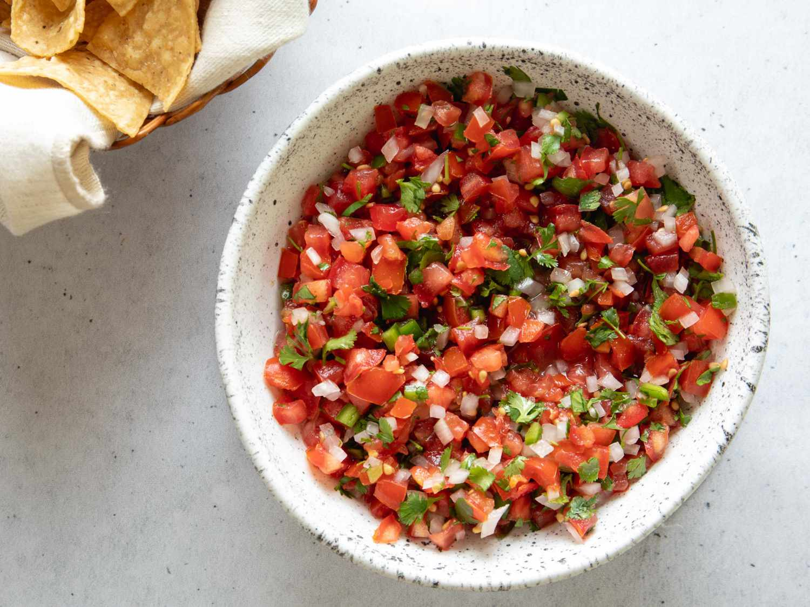

Home
Pico de Gallo

Description
Pico de gallo literally translates to "rooster beak," and, while the etymology is not exactly exhaustively documented, I trust The New Food Lover's Companion's explanation that the finger motion you use when picking up bits of pico de gallo to stuff into your tacos or top your totopos resembles that of a rooster's beak.
Also known as salsa fresca or salsa mexicana (because of its resemblance to the colors of the Mexican flag), at its most basic, it's made by combining chopped tomatoes, onions, and chiles. But our version is ever-so-slightly optimized for better flavor and texture.
Ingredients
- 1 1/2 pounds (680g) ripe tomatoes, cut into 1/4- to 1/2-inch dice (about 3 cups); see notes
- Kosher salt
- 1/2 large white onion, finely diced (about 3/4 cup)
- 1 to 2 serrano or jalapeño chiles, finely diced (seeds and membranes removed for a milder salsa)
- 1/2 cup finely chopped fresh cilantro leaves
- 1 tablespoon (15ml) lime juice from 1 lime
Steps
- Season tomatoes with 1 teaspoon (4g) salt and toss to combine. Transfer to a fine-mesh strainer or colander set in a bowl and allow to drain for 20 to 30 minutes. Discard liquid.
- Combine drained tomatoes with onion, chiles, cilantro, and lime juice. Toss to combine and season to taste with salt. Pico de gallo can be stored for up to 3 days in a sealed container in the refrigerator.